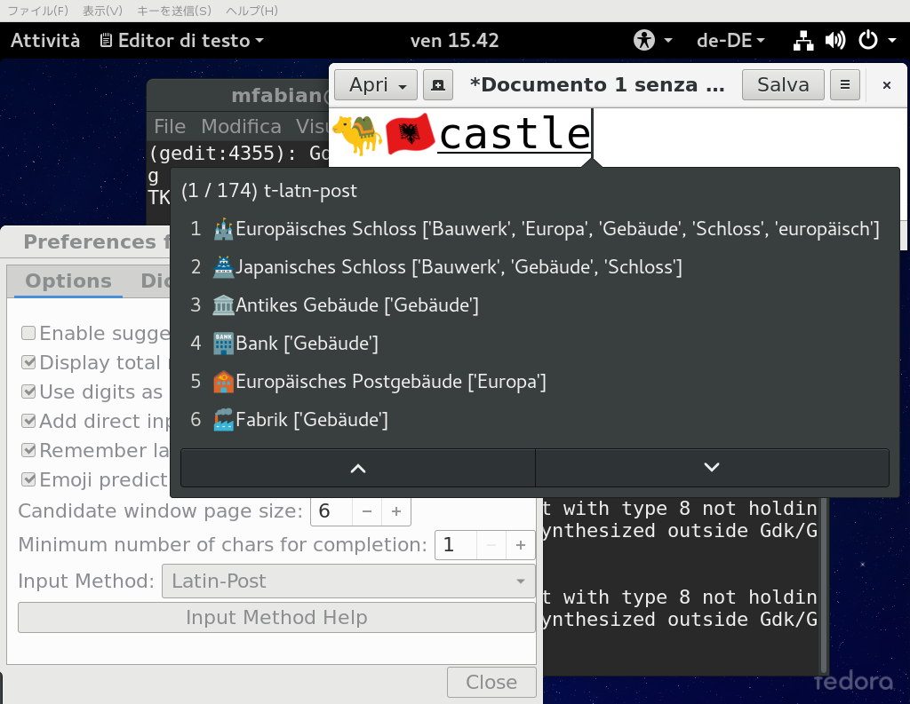
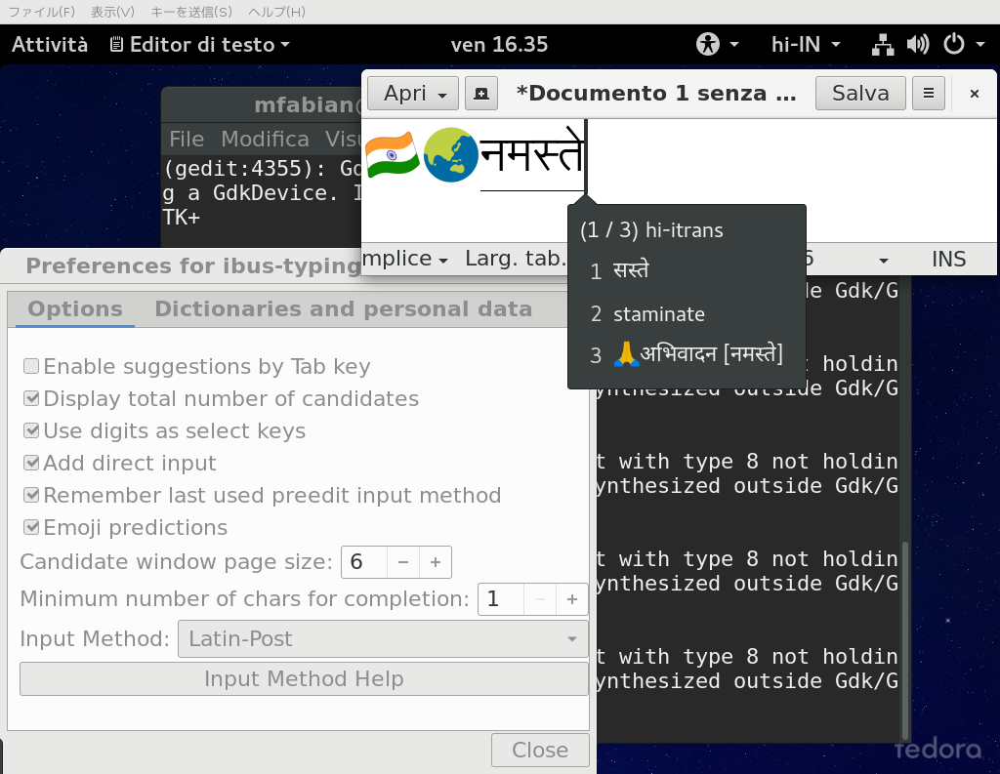
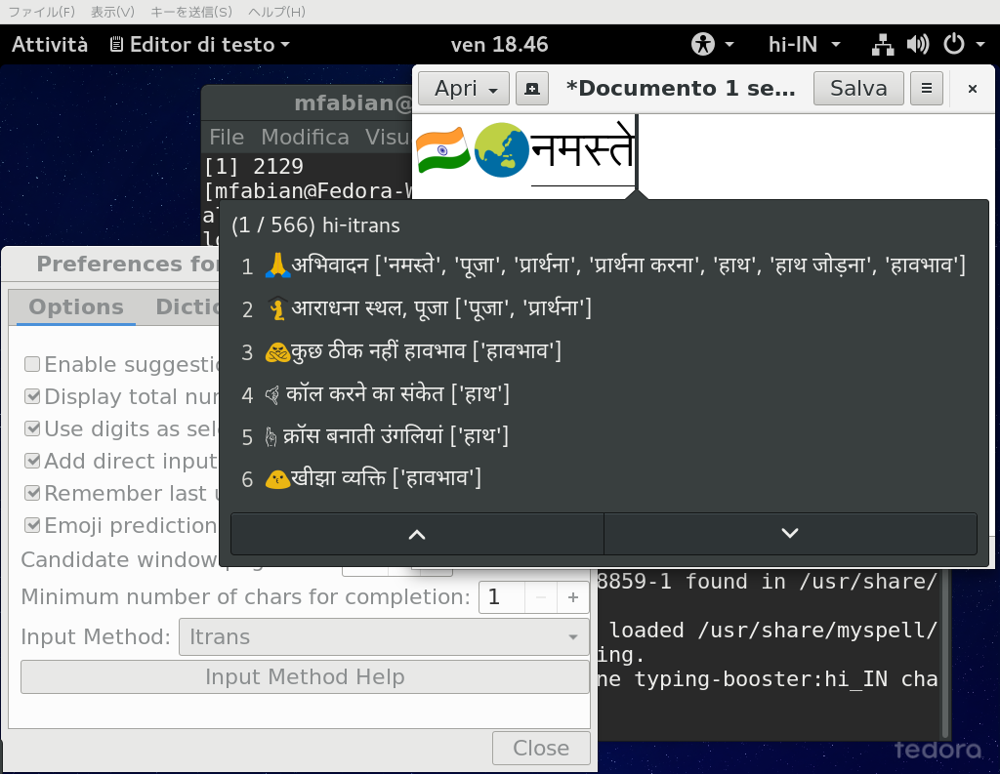

| Key combination | Effect |
|---|---|
| Space | Commit the preëdit (or the selected candidate, if any) and send a space to the application, i.e. commit the typed string followed by a space. |
| Return | Commit the preëdit (or the selected candidate, if any) and send a Return to the application. |
| Enter | Commit the preëdit (or the selected candidate, if any) and send a Enter to the application. |
| Tab |
|
| Escape |
|
| Left (Arrow left) | Move cursor one typed key left in the preëdit text. May trigger a commit if the left end of the preëdit is reached. |
| Control+Left | Move cursor to the left end of the preëdit text. If the cursor is already at the left end of the preëdit text, trigger a commit and send a Control+Left to the application. |
| Right (Arrow right) | Move cursor one typed key right in preëdit text. May trigger a commit if the right end of the preëdit is reached. |
| Control+Right | Move cursor to the right end of the preëdit text. If the cursor is already at the right end of the preëdit text, trigger a commit and send a Control+Right to the application. |
| Backspace | Remove the typed key to the left of the cursor in the preëdit text. |
| Control+Backspace | Remove everything to the left of the cursor in the preëdit text. |
| Delete | Remove the typed key to the right of the cursor in the preëdit text. |
| Control+Delete | Remove everything to the right of the cursor in the preëdit text. |
| Down (Arrow down) | Select the next candidate. |
| Up (Arrow up) | Select the previous candidate. |
| Page_Up | Show next page of candidates. |
| Page_Down | Show previous page of candidates. |
| F1 | Commit the candidate with the label “1” followed by a space |
| F2 | Commit the candidate with the label “2” followed by a space |
| ... | ... |
| F9 | Commit the candidate with the label “9” followed by a space |
| Control+F1 | Remove the candidate with the label “1” from the database of learned user input (If possible, if this candidate is not learned from user input, nothing happens). |
| Control+F2 | Remove the candidate with the label “2” from the database of learned user input (If possible, if this candidate is not learned from user input, nothing happens). |
| … | … |
| Control+F9 | Remove the candidate with the label “9” from the database of learned user input (If possible, if this candidate is not learned from user input, nothing happens). |
| 1 … 9 | Same as F1 … F9 if the option “Use digits as select keys” is enabled. Enabling that option makes selecting candidates a bit easier because the number keys 1 … 9 are closer to the fingers then F1 … F9 on most keyboards. On the other hand, it makes completing when typing numbers impossible and it makes typing strings which are combinations of letters and numbers like “A4” more difficult. If digits are used as select keys, numbers can only be typed when no candidate list is shown. In most cases this means that numbers can only be typed when nothing else has been typed yet and the preëdit is empty. |
| Control+1 … Control+9 | Same as Control+F1 … Control+F9 if the option “Use digits as select keys” is enabled. |
| AltGr+F12 | Show related emoji and Unicode symbols or related words |
| AltGr+Space | Insert a literal space into the preëdit. |
When more than one input method at the same time is used, the following additional key bindings are available:
| Key combination | Effect |
|---|---|
| Control+Down | Switch input method used for the preëdit to the next input method |
| Control+Up | Switch input method used for the preëdit to the previous input method. |
| Mouse event | Effect |
|---|---|
| Button 1 click on a candidate | Commit the candidate clicked on followed by a space (Same as F1…F9). |
| Control + Button 1 click on a candidate | Remove clicked candidate from database of learned user input (If possible, if this candidate is not learned from user input, nothing happens). |
| Button 3 click on a candidate | Show related emoji and Unicode symbols or related words (Same as Alt+F12). |
ibus-typing-booster supports using more than one input method/transliteration at the same time.
For example, if one uses the ibus-typing-booster engine “mr-IN”, i.e. the engine for the Indian language Marathi, one can select one of the Marathi input methods mr-itrans, mr-phonetic, mr-inscript, and mr-inscript2 in the setup tool. Keys typed will be transliterated using the selected transliteration method and looked up in the mr_IN hunspell dictionary and the user database of previous input.
To add English as a second language to use at the same time, one can use the check box option “Add direct input” in the setup tool. If that option is selected, direct keyboard input is added as a second input method and the en_GB (British English) dictionary is added as a second dictionary in addition to the mr_IN dictionary.
If more than one input/transliteration method is enabled, the typed keys will will be transliterated with each transliteration method and each result will be looked up in the enabled dictionaries and in the user database of previous input.
That way, to type English, one does not have to switch off the Marathi engine of ibus-typing-booster, one can just type and suitable English candidates will show up as well in the candidate list. After typing a few characters, Marathi input is unlikely to match English candidates and English input is unlikely to match Marathi candidates. This works even better after ibus-typing-booster has learned a while from the user input because ibus-typing-booster tries to complete the currently typed word by also using the last few words typed before as additional information. Therefore, if the user types a combination of words again he has already typed previously, the prediction for the currently typed word will be much better.
Using the setup tool it is currently only possible to add British English as a second language to the main language of an ibus-typing-booster engine.
But internally, ibus-typing-booser already supports any combination of input methods and dictionaries, only the setup tool is not yet able to set this up. It can be done by setting the appropriate dconf keys manually though.
Example:
Setting three input/transliteration methods:
$ dconf write /desktop/ibus/engine/typing-booster/typing-booster-mr-in/inputmethod '"mr-itrans,t-latn-post,NoIme"'sets the three transliteration methods, “mr-itrans” (Marathi Itrans), “t-latn-post” (A postscript input method to type accented Latin characters, e.g. typing “u"” will produce “ü”), and “NoIme” (direct keyboard input without any transliteration).
Setting 3 dictionaries:
$ dconf write /desktop/ibus/engine/typing-booster/typing-booster-mr-in/dictionary '"mr_IN,en_GB,de_DE"'sets the Marathi, the British English,and the German dictionary.
ibus-typing-booster supports prediction of emoji as well. This can be enabled or disabled with the option “Emoji predictions” seen in the screen shot (on by default).
The screen shot shows coloured emoji, to make that work an experimental patch for cairo and a suitable font is needed. If this is not installed, the emoji support in ibus-typing-booster will still work but the emoji will be displayed in black and white. A good black and white font for emoji is the Symbola font by George Douros (also available as a package for Fedora). Best use the latest version updated for Unicode 9.0.0.
In the screen shot, the emoji 🏰 (U+1F3F0 EUROPEAN CASTLE) is shown as the last candidate in the first page when the text “castle” is typed. If reasonable matches for emoji are found, the first match is shown as the last candidate in the first page. If more than one emoji has matched the input, the other matches can be found by scrolling down the candidate page. If an emoji is selected and committed, it will be remembered just like ibus-typing-booster remembers other words and will be shown with higher priority next time.
It is also possible to look up related emoji which may not have matched the typed text well but are related to the emoji shown because they share keywords or categories. To show related emoji, select an emoji in the candidate list by moving up or down in the candidate list using the arrow-up/arrow-down keys or the page-up/page-down keys until the desired emoji is highlighted, then press Alt+F12. As seen in the screen shot, emoji for other types of castles or buildings are then shown. The lists of words shown in square brackets are the keywords the shown emoji have in common with the originally selected emoji. By typing the “Escape” key, one can go back to the original list.
By the way, the related emoji shown in the screen shot have German names and keywords. That’s because I am using German as the main language for ibus-typing-booster here with English as a second language (See Multilingual input). Because I am using English as a second language, the input text “castle” did match (The German equivalent “Schloss” would have matched as well). When looking up related emoji, they are shown in all languages ibus-typing-booster is setup to use, but they are sorted in the order of preference of the languages. So German is on top because it is the main language, English matches for related emoji are further down in the candidate list.
The following screenshot shows another example using Hindi as the main language and English as a second language:
With Hindi as well, one can highlight the emoji which matched the typed string नमस्ते (“namaste”) and show related emoji:
Two emoji in the candidate list in the screen shot are shown in black and white because they are missing in the coloured emoji font and a black and white font is used as a fallback.
ibus-typing-booster can also find words which are related to any of
the candidates displayed. To show related words for a candidate, move
up or down in the candidate list using the arrow-up/arrow-down keys or
the page-up/page-down keys until the desired emoji is highlighted,
then press Alt+F12 (When Alt+F12 is pressed
Looking up related words like this currently only works for English. When trying to find related words for non-English words, nothing will happen.
The lookup of related words uses NLTK and will only work when NLTK for Python3 and the wordnet corpus for NLTK are installed. On Fedora, you can install it like this:
sudo dnf install python3-nltk
python3
import nltk
nltk.download()
A download tool for NLTK data as seen in the next screen shot opens, select the wordnet corpus and click the “Download” button: